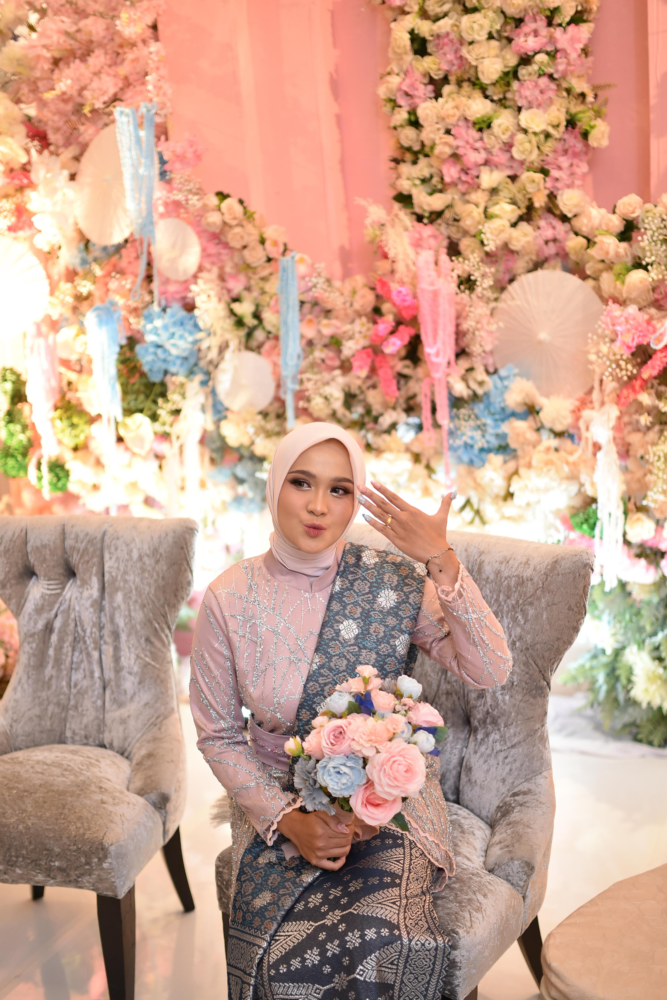
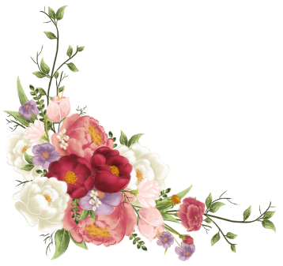
bride
Zhafira Khairunnisa
Anak pertama dari
Bapak M. Faried Arifiansyah & Ibu Yulia
Ramadhani
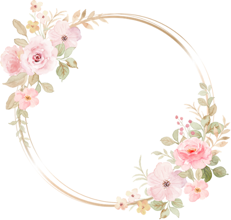
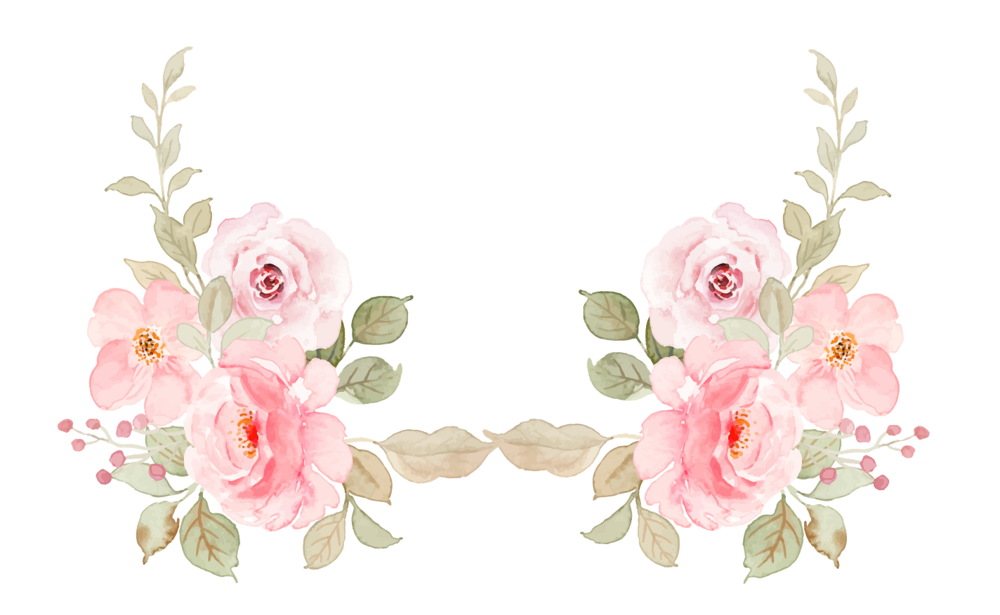
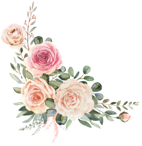
The Wedding Of
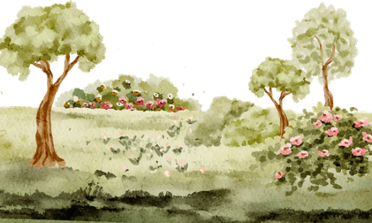
Dan di antara tanda-tanda kekuasaan-Nya ialah Dia menciptakan untukmu isteri-isteri dari jenismu sendiri, supaya kamu cenderung dan merasa tenteram kepadanya, dan dijadikan-Nya di antaramu rasa kasih dan sayang.
Q.S. Ar-Rum: 21
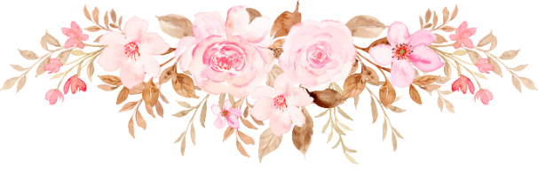


bride
Anak pertama dari
Bapak M. Faried Arifiansyah & Ibu Yulia
Ramadhani
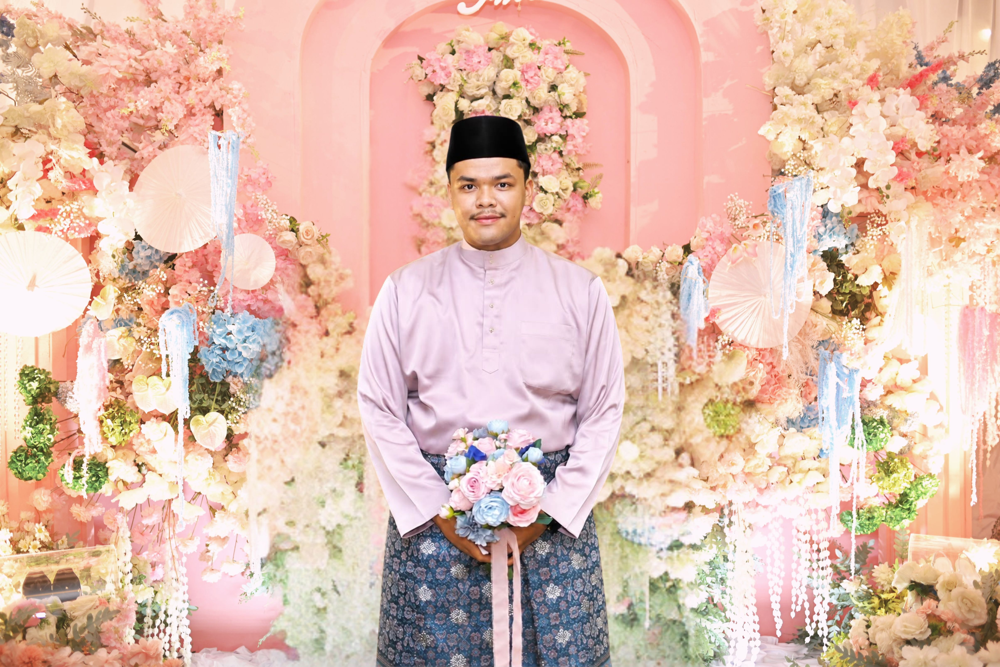
Groom
Anak kedua dari
Bapak Tukiman Khateni & Ibu Tengku Ida
Adriani
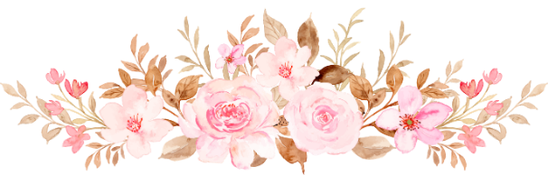
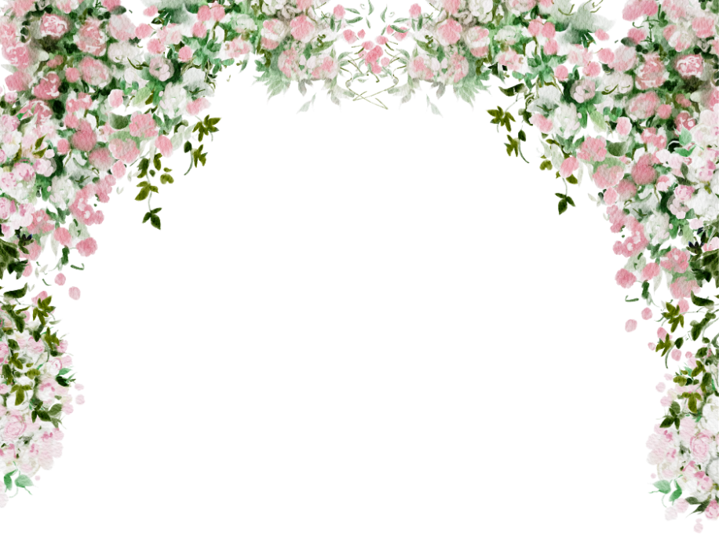
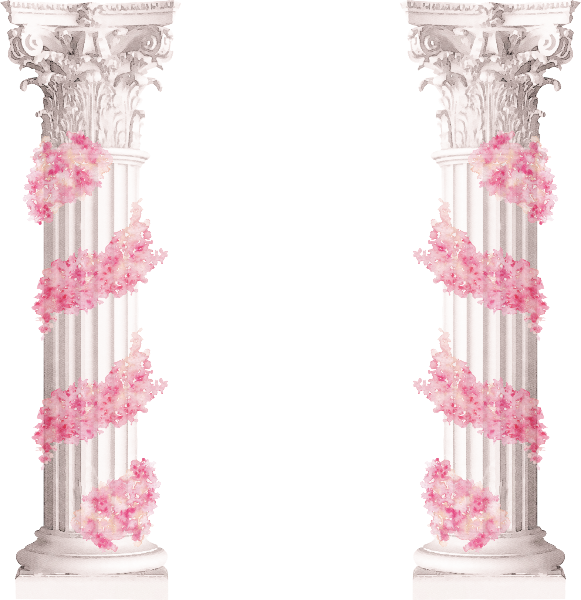
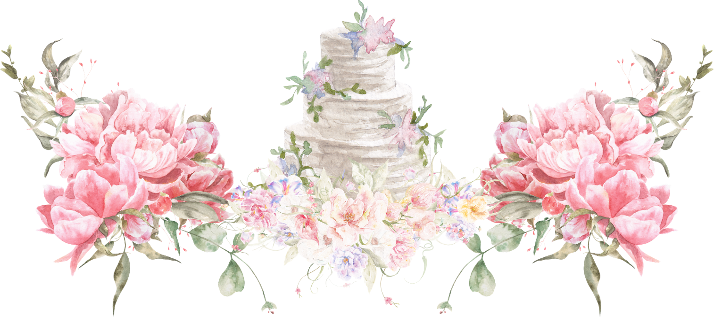
Save The Date
Sabtu, 10 Oktober 2026
Pukul 08.00 WIB – Selesai
New Hollywood Hotel, Jl. Kuantan Raya No.120, Sekip, Lima Puluh, Kota Pekanbaru, Riau 28151
Buka MapsLive Streaming Resepsi
Tautan aktif H-1 sebelum acara berlangsung.
Sabtu, 10 Oktober 2026
Pukul 11.00 WIB – Selesai
New Hollywood Hotel, Jl. Kuantan Raya No.120, Sekip, Lima Puluh, Kota Pekanbaru, Riau 28151
Buka Maps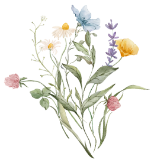
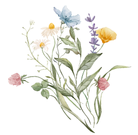
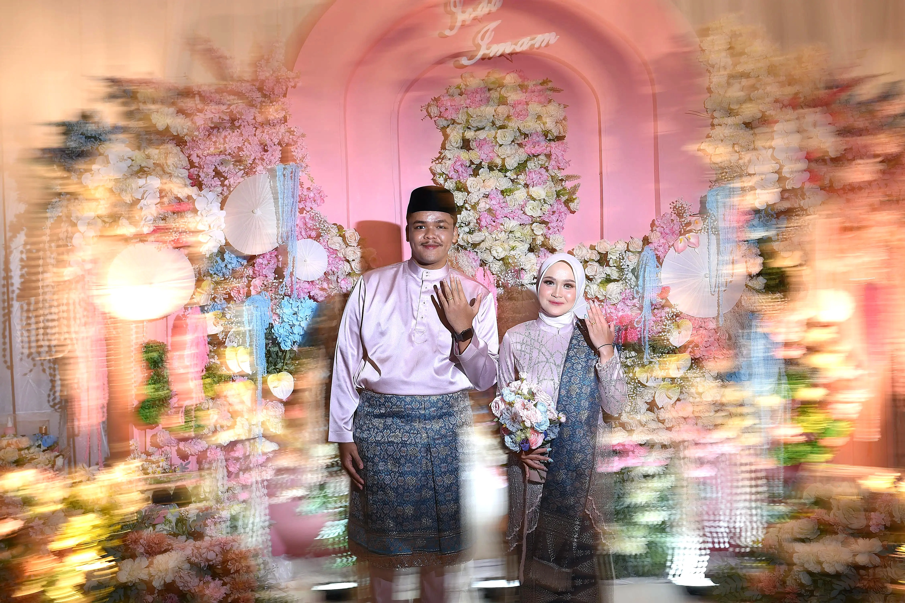
Awal Pertemuan Tak ada yang benar-benar kebetulan di dunia ini. Di sebuah sudut hangat bernama Separuh Bumi, Allah mempertemukan dua insan yang sebelumnya hanyalah orang asing. Dari sapaan sederhana dan pertemuan yang tak pernah direncanakan, tumbuh sebuah kisah yang kelak menjadi awal perjalanan cinta kami.
Perjalanan Bersama Seiring waktu, kebersamaan mengajarkan kami arti saling mengenal, saling memahami, dan saling menguatkan. Tawa, cerita, dan setiap langkah yang kami lalui perlahan mengubah dua perjalanan berbeda menjadi satu tujuan yang sama.
Keyakinan Cinta mengajarkan kami bahwa rumah bukanlah sebuah tempat, melainkan seseorang yang selalu ingin kita tuju. Dari setiap proses yang kami lalui, tumbuh keyakinan untuk saling menjaga dan melangkah bersama selamanya.
Lamaran Dengan hati yang penuh kesungguhan, ia mengucapkan janji untuk mendampingi dalam setiap suka dan duka. Momen sederhana itu menjadi awal dari langkah besar menuju masa depan yang kami impikan bersama.
Hari Bahagia Kini, dengan penuh rasa syukur, kami melangkah menuju ikatan suci pernikahan. Semoga hari ini menjadi awal dari perjalanan seumur hidup yang dipenuhi cinta, kebahagiaan, dan keberkahan.
Prewedding
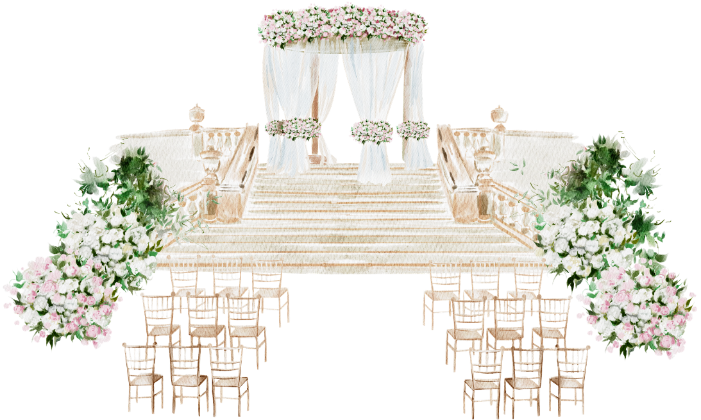
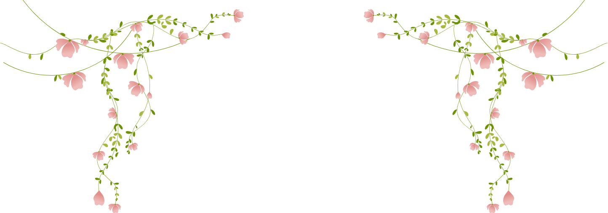
Wedding Gift
Doa restu Anda merupakan karunia yang sangat berarti bagi kami. Namun jika ingin memberikan tanda kasih, kami menyediakan pilihan berikut.
CIMB Niaga
7638 2465 3000
a.n. Zhafira Khairunnisa
CIMB Niaga
7631 2958 2300
a.n. Ahmad Arrasichan Immamatul Ulya
Untuk kado dalam bentuk barang, silakan hubungi kami langsung agar kami dapat membagikan alamat pengiriman.
RSVP
Merupakan suatu kehormatan dan kebahagiaan bagi kami apabila Bapak/Ibu/Saudara/i berkenan hadir dan memberikan doa restu kepada kami.
Terima kasih atas doa dan restunya.
#IchaImamWedding